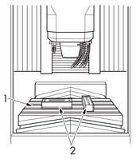
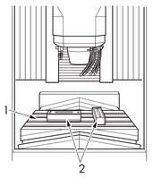
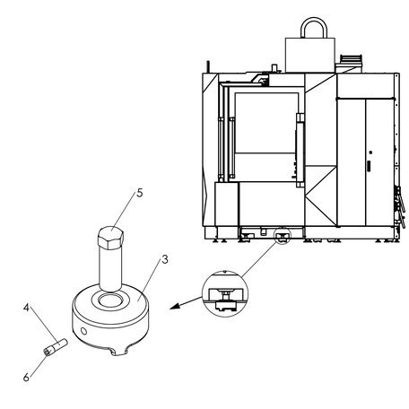

|
<< Click to Display Table of Contents >> Navigation: Chapter 2 Periodic Maintenance > Machine > Checking/Adjusting the Leveling of the Machine |
|
|
<< Click to Display Table of Contents >> Navigation: Chapter 2 Periodic Maintenance > Machine > Checking/Adjusting the Leveling of the Machine |
Maintenance period: Every 1000 Hours
WARNING |
•Turn ON the machine power supply, and confirm that all machine movements have stopped prior to performing the following procedures. •Exercise extreme caution as entry into the machine is necessary in order to perform the following procedures. |
Required items
Name |
Order Number |
Model/Type |
Manufacturer |
Quantity |
|---|---|---|---|---|
Leveling Gauge |
- |
- |
- |
2 |
Procedure (Refer to Figure 3.1)
1)Turn ON the power.
2)Move the X-axis and the Y-axis to the center positions of their respective strokes.
3)Move the Z-axis to the top of the stroke.
4)Put two leveling gauges [2] on the table [1].
•Put the leveling gauges so that they become parallel to the X-axis and the Y-axis respectively.
5)Check that the bubble in each leveling gauge [2] is central.
•If the bubble in each leveling gauge is not centered, adjust the leveling of the machine.
6)Remove the machine covers to access the leveling adjustment points.
7)Remove the devices around the leveling adjustment points if they are obstructing access.
8)Loosen the lock nuts for the leveling adjustment points.
9)Perform adjustment by using the leveling bolts [5] so that the bubble in each leveling gauge is centered.
NOTICE |
Make sure that load is evenly placed on each leveling bolt. Otherwise, the bed may be distorted. |
10)Tighten the lock nuts.
11)Repeat steps 5) to 10) for Y-axis positions at the plus stroke end and the minus stroke end.
12)Move the Y-axis to the center position of its stroke again and check that the bubble in each of the two leveling gauges on the table is centered.
13)Repeat steps 5) to 10) for X-axis positions at the plus stroke end and the minus stroke end.
14)Move the X-axis to the center position of its stroke again and check that the bubble in each of the two leveling gauges on the table is centered.
15)Remount the devices removed to access the leveling adjustment points.
16)Remount the covers removed to access the leveling adjustment points.
This completes the operation for checking/adjusting the leveling of the machine.
 


Figure 3.1 Checking/Adjusting the Leveling of Machine
No. |
Name |
No. |
Name |
1 |
Table |
4 |
Protection Metal |
2 |
Leveling Gauge |
5 |
Bolt, Leveling |
3 |
Base, Leveling |
6 |
Set-Screw, Flat PT M12X12 |